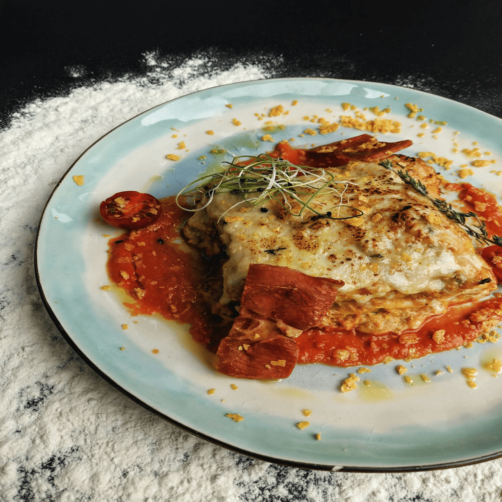

Lasagna

Description
Lasagna is a classic Italian dish made with layers of flat pasta, rich sauce, and creamy melted cheese.
意大利面是一种经典的意大利美食，由层层扁平的面饼、浓郁的酱汁和乳脂状的融化奶酪组成。
Bake the layered ingredients until the cheese is bubbly and the pasta is tender for a hearty meal.
将这些分层食材烘烤至奶酪起泡、面饼软糯，即可享用一份丰盛的佳肴。
Ingredients
- Lasagna noodles
意大利宽面
- Ground beef
牛肉末
- Ricotta cheese
里科塔奶酪
- Mozzarella cheese
马苏里拉奶酪
- Tomato sauce
番茄酱
Steps
- Preheat the oven and boil the lasagna noodles until they are al dente.
预热烤箱，将意大利宽面煮至软硬适中。
- Brown the ground beef in a large skillet and stir in the tomato sauce.
在大炒锅中将牛肉末炒熟，随后倒入番茄酱翻炒。
- Mix the ricotta cheese with an egg and some fresh parsley in a bowl.
在碗中将里科塔奶酪、鸡蛋和新鲜欧芹混合均匀。
- Layer the noodles, meat sauce, ricotta mixture, and mozzarella cheese in a baking dish.
在烤盘中交替铺上宽面、肉酱、奶酪混合物和马苏里拉奶酪。
- Bake for about thirty minutes until the cheese is melted and bubbling.
烘烤约三十分钟，直到奶酪融化并冒泡。
Home